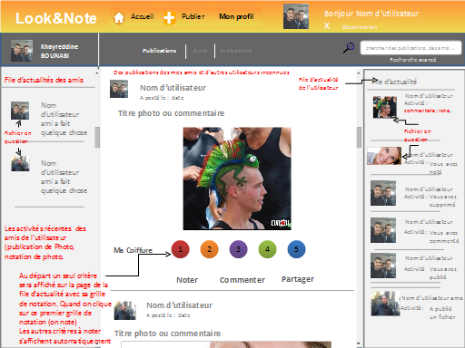

|

|
Page acceuil après identification
Dans cette page, on trouve trois fils d'actualités : le premier à droite, les activités de l'utilisateur, celui du milieu, les publications des utilisateurs inconnus et enfin le dernier à gauche, les activités des amis de l'utilisateur. Dans cette page, l'utilisateur a également la possiblité de noter des publications.
|